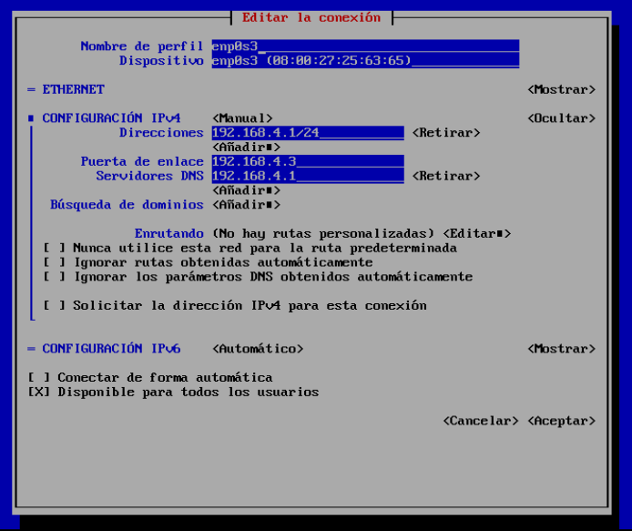
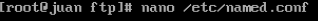
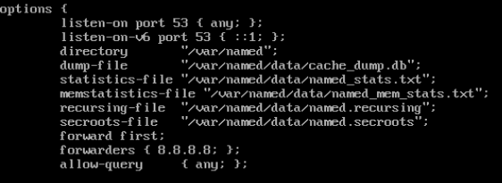
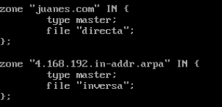
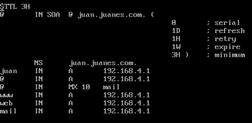
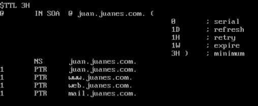
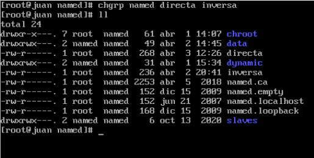
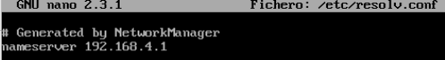
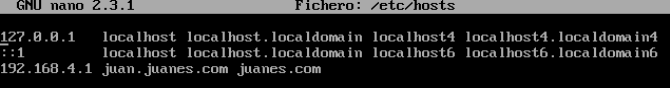
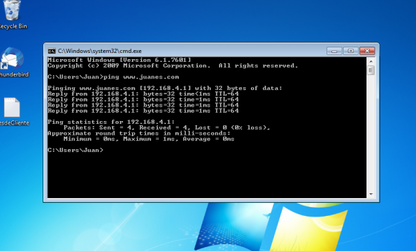

Tutorial de instalacion servidor DNS
Abril 4, 2023 posted por Juan E. Castro
El sistema de nombres de dominio (DNS) es el directorio telefónico de Internet. Las personas acceden a la información en línea a través de nombres de dominio como nytimes.com o espn.com. Los navegadores web interactúan mediante direcciones de Protocolo de Internet (IP). El DNS traduce los nombres de dominio a direcciones IP para que los navegadores puedan cargar los recursos de Internet. A continuacion se relizara un tutorial de como se realiza la intalacion de un servidor de DNS en Centos 7.
Requisitos:
- Direccion Ip estatica
- Maquina virtual Centos 7
Paso 1: Cofiguracion de Ip estatica.
Se configura la Ip estatica de la maquina virtual para poder instalar el servidor de DNS.
Paso 2: Instalacion del servidor DNS.
Se realiza la instalacion del servidor de DNS a traves del comando en Linux el cual es el siguiente.
Paso 3: Configuracion del servidor DNS.
Se realiza la configuracion del servidor de DNS en la ruta /etc/named.conf donde abrimos esa ruta con cualquier editor de text. Asi mismo definimos la ubicacion de nuestras zonas de busqueda directa e inversa.
  Paso 4: Creacion de Zona de busqueda directa.
Se crea una nueva zona de busqueda directa la cual se realiza creando un documento en la direccion /var/named a la cual le llamaremos directa, este documento lo abriremos con cualquier editor de texto y tendra la siguiente configuracion.
Paso 5: Creacion de Zona de busqueda inversa.
Asi mismo como se creo la zona de busqueda directa, se crea una zona de busqueda invera en la misma direccion donde se creo la zona ed busqueda directa, esta zona de busqueda inversa tendra la siguiente configuracion.
Paso 6: Configurar el grupo propietario para los archivos anteriores.
El grupo propietario para ambos archivos debe ser named para que nuestro servicio pueda tener acceso a los mismos.
Paso 6: Configurar el grupo propietario para los archivos anteriores.
El grupo propietario para ambos archivos debe ser named para que nuestro servicio pueda tener acceso a los mismos.
Paso 7: Configuraciones adicionales.
Editamos el archivo resolv.conf para indicar a nuestro servidor que él es el DNS. Allí colocamos la IP del servidor que estamos configurando. Editamos el archivo hosts y colocamos la IP del servidor así como el nombre del mismo.
 Pruebas de funcionamiento del servidor DNS.
Para realizar la prueba de que el servidor esta bien configurado, se ejecuta el comando ping en la consola del sistema (cmd) a la direccion www.juanes.com si muestra el ping significa que el servidor quedo configurado correctamente.
